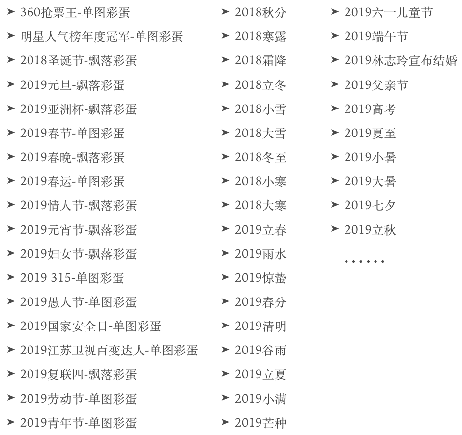
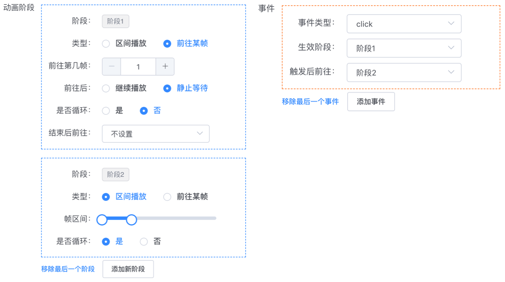

原文连接:https://www.cnblogs.com/dongtianee/p/egg_development.html
本文首发于360技术公众号，360搜索彩蛋自动化开发实践。
引子
我们常说的彩蛋，一般是指影视剧在剧情结束之后出现的影视片段，或者是游戏中制作者特意为玩 家留下的、隐藏在游戏中的一些有趣的内容。对于搜索引擎来说，彩蛋是指搜索引擎在特定的检索 词下，刻意为用户展示的一些额外信息。搜索引擎彩蛋的出现往往在用户的预期之外，其独立于正 常的搜索结果流，是用户在检索时预期之外的信息获取方式，用途常为态度表示、社会责任、商业 推广等。在本文中，“彩蛋”特指“搜索引擎彩蛋”。
发展历程
在以往很长的一段时间内，360搜索彩蛋的开发方式为按需开发。当发起一个彩蛋需求后，前端开发工程师会按照需求逐步拆解，将设计出的彩蛋效果还原到网页中。比如下图1呈现的碎屏彩蛋——当用户搜索某个词时，页面呈现出碎裂效果。
图1 碎屏彩蛋
像这类彩蛋需求往往都比较复杂，并且无共通性，前端开发人员除了需要处理彩蛋本身复杂的实现逻辑外，还需要考虑彩蛋的浏览器兼容性、定时退出、主动关闭次数、窗口自适应等逻辑，开发周期较久。由于此类彩蛋需要优秀的创意支撑，因此需求量并不大，按需开发带来的消耗我们还可以接受。
从去年开始，360搜索UED团队发起了节气彩蛋计划——24节气当天，与该节气相关的搜索词的搜索结果页面都会将一副优美的插画作为彩蛋呈现给用户。此时按需开发的复杂性便无法接受了，尤其是重复的逻辑处理。因此，我们将彩蛋的公用部分代码提取封装后，制作成通用节气彩蛋生成工具，只需要简单配置一下即可生成彩蛋脚本，见下图2。
图2 通用节气彩蛋生成工具 - PC版
基于这个工具，我们完成了2018年初至今全部的节气彩蛋上线工作，设计同学与运营同学直接对接，无需前端开发人员参与。
这里必须盛赞一下360搜索UED团队，24节气插画真的全部都超级好看，敬请大家在24节气当天来360搜索(so.com)找插画彩蛋哟。如果对往期插画感兴趣也可以去站酷关注360搜索UED，查看更多高清大图。

图3 24节气彩蛋插画
有了通用节气彩蛋生成工具后，我们都尝到了“偷懒”的乐趣，“点点按钮”就发布上线，成为了前端同学和运营同学的共同追求，更多的彩蛋生成工具先后诞生了。如通用单图彩蛋生成工具，服务于弹出单张图片蒙层类型的彩蛋；通用飘落彩蛋生成工具，适用于一切飘落、掉落类效果彩蛋的生成。有了这些生成工具之后，彩蛋成为了一种常规且便捷的运营手段，使用率大大提升。据作者的不完全统计，截止目前使用生成工具上线的彩蛋数量非常可观，见下图4。

图4 部分使用自动工具上线的彩蛋
动画类彩蛋的自动化开发
到这里，一般的彩蛋需求都可以很好地被满足了，但具有动画效果的彩蛋仍然没有很好的解决办法——要么使用gif图，要么则需要占用前端人力进行开发。于是，针对An(Adobe Animate CC) 和 Ae(Adobe After Effects CC)两个设计师常用的动画编辑软件，我们探索了两种方式来避免前端开发工作。
An动画彩蛋自动生成
An自带了动画预览功能，可以将设计师制作好的动画导出为浏览器可执行的脚本资源。我们通过分析An导出后文件的特点和脚本结构，开发了An动画彩蛋自动生成工具。
图5 An动画彩蛋自动生成工具
下表1列举出了此工具的优点和不足。
表1 An动画彩蛋自动生成工具的优缺点
| 优点 | 不足 |
| 动画依赖的图片资源可自动合并为雪碧图，有效减少请求数 | 动画执行基础依赖createJs,186Kb(60K gziped)，导出的动画脚本体积很大，甚至会远超于基础依赖。 |
| 相关人员在导出预览时，需规定文件命名、导出命名等，受限较多，比较刻板 | |
| 一旦使用了新特性，比如位图，渲染、描边等，导出后的脚本会发生变化，自动生成工具将会失效 | |
| 只适用于简单播放型动画，交互困难，需要编程 |
可以看出基于An的自动生成工具通用性不高，不具备普适价值，但仍然可以很好的满足我们团队部的使用需求。经过验证，借助此工具自动生成的脚本可以正常地将插画师设计出的动效彩蛋还原至360搜索结果页。
Ae动画彩蛋自动生成
与An不同，得力于bodymovin插件和lottie-web库，Ae制作的动画可以被稳定地导出和还原。使用bodymovin插件，可以将Ae帧动画描述为一个json文件。这个json文件至关重要，通过lottie-web脚本库可以将动画还原至浏览器环境中。事实上，还有lottie-android和lottie-ios等多个库，可以将动画还原到Native App、React Native、Flutter等开发环境中。在这里，我们只关注一下lottie-web。
lottie-web提供了丰富的动画播放API，比如播放、暂停、设置播放速度、指定播放某段动画等，有了这些还原基础，只需要处理一下脚本执行时机，就可以把动画还原到搜索结果页中了。但仅仅如此似乎不能满足复杂一些的交互需求，比如当我们希望用户点击某个按钮来触发某段动画的执行时，就必须进行二次开发了。
为此，我们引入状态机机制，可以将复杂的动画切割为多个状态，通过状态机机制来控制动画执行的顺序。引入事件机制，除了状态机产生的自动状态切换，事件也可以引起状态切换，从而实现动画与用户之间的交互。
一句话概括Ae动画的还原思路：使用bodymovin生成的json用来描述动画的执行过程，使用状态机和事件生成的json来描述动画的执行顺序。
我们开发了Ae动画编辑器，来生成描述动画执行过程和执行顺序的json文件，再通过Ae动画彩蛋自动生成工具生成360搜索结果页的内嵌脚本并完成发布上线。
图6 Ae动画彩蛋生成工具和Ae动画编辑器
Ae动画编辑器的主要实现原理是基于动画关键帧的区间播放。lottie-web的API这里不再详细说明，其中有一个API允许用户依据起始帧和结尾帧进行区间播放。我们引入状态机和事件机制后，就可以用状态机自动触发或通过事件手动触发来引起播放区间的切换，从而实现整个动画顺序可编辑、可交互。
举个例子，假设我们的期望是“动画在初始时停留在第1帧，直至用户点击后，开始在第1～50帧循环”，状态机和事件的配置即如下图7所示。

图7 状态机与事件配置
在设置状态机和事件之前，必须先规定动画的总帧数。状态机和事件都可以根据动画期望无限制的添加。可以设置“结束后自动前往”来自行改变动画状态，也可以通过事件来手动改变。事件类型包括常见的浏览器事件，触发事件后除了前往某个状态，还可以跳转到新页面等。 上面配置的json描述如下。
1 "stage":[{
2 "stage": 1,
3 "frame_s": 1,
4 "loop": false,
5 "play": false,
6 "isRange": false,
7 "endToStage": null
8 }, {
9 "stage": 2,
10 "frame_s": [1, 50],
11 "loop": true,
12 "play": false,
13 "isRange": true,
14 "endToStage": null
15 }],
16 "event":[{
17 "onStage": 1,
18 "type": "click",
19 "toStage": 2,
20 "url": "",
21 "isBlank": false
22 }] 将我们的意愿描述成上面的json后，结合lottie-web提供的API和事件，再将json还原成我们的描述就比较容易了。这里只提一点注意事项，在还原事件时需要首先将事件类型去重，避免同一个事件重复绑定，事件触发后通过判断当前动画阶段来定位需要执行的任务。
访问这个Demo，可以在线体验Ae动画编辑器，可以使用内置的示例进行随意编辑和预览。
Ae动画生成工具的缺点和不足之处如下表2所示。
表2 Ae动画彩蛋自动生成工具的优缺点
| 优点 | 不足 |
| bodymovin插件为通用性而生，导出时无繁琐限制，且跨平台。 | 导出的图片未自动合并为单张雪碧图 |
| 通过自由编辑事件和状态机，可对一段有序动画进行你想要的任何后期处理，可轻松实现简单用户交互 | 动画执行依赖lottie-web库，SVG-only(194KB,61KB gziped) |
| web端支持多种动画渲染方式 - canvas,SVG,HTML | Ae功能受限，部分功能如expressionse、ffects、图层样式等无法还原，需要设计师自行取舍 |
| 导出的json描述文件非常小。图片素材可以base64形式内嵌在json文件中，实现快速加载（不过体积较大，图片无法压缩） |
尽管有一些缺点，但仍无法掩盖其得强大的自动化开发的能力。借助Ae动画编辑器，我们可以对动画进行二次组装，且可实现简单的交互。目前，360搜索借助Ae动画彩蛋生成工具已经生成并上线了如2019母亲节、2019世界地球日等多个动画彩蛋。
设计师使用Ae动画导出时，注意事项可以参考官方说明。
总结
Ae动画编辑器具有很好的普适性，如果你还在使用传统的帧动画或者gif图来实现动画效果，可以尝试一下bodymovin + lottie技术，不仅可以帮我们还原动画，还可以做一些简单的交互设计。
生命不息，探索不止。通过回顾360搜索彩蛋开发方式的发展历程，我们可以看到相关人员通过不断努力地探索更加自动和智能的开发方式来解决工作中遇到的种种繁复的工作，从而有效降低成本，提高需求的落地效率。彩蛋开发方式的发展历程只是你我在工作道路上的一个小小的缩影，我自认为这种探索精神应该渗透到一切项目的迭代优化过程中，因此特意分享一下。